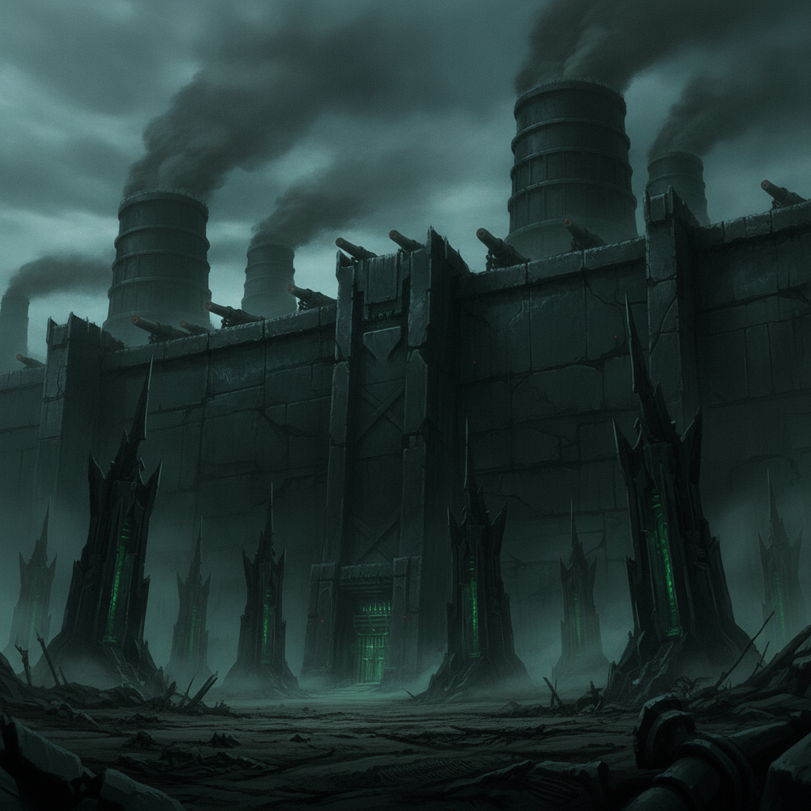
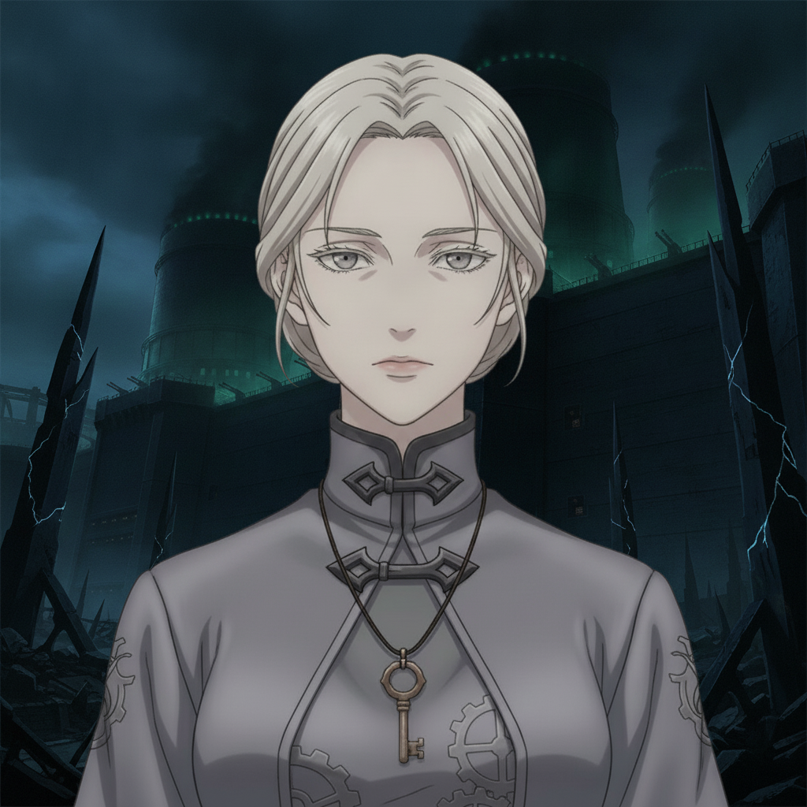

The outer works of the Enemy Organization are a grim fortress of black iron and sickly green light. Here, our coalition begins its infiltration, fighting across several desperate battlefronts.
Isolde is no longer the restrained channeler from the college. Here, she draws her hidden knife of doubt in the open, wielding her Sela-strong precision with a newfound, terrifying freedom.

Isolde Vorn“This is my thread, Caedon. Not the one spun for me. This is what I choose.”
Her words are a declaration. We fight as one, a dance of precise power and unwavering conviction. With every enemy downed, every defense breached, Isolde solidifies her own path.